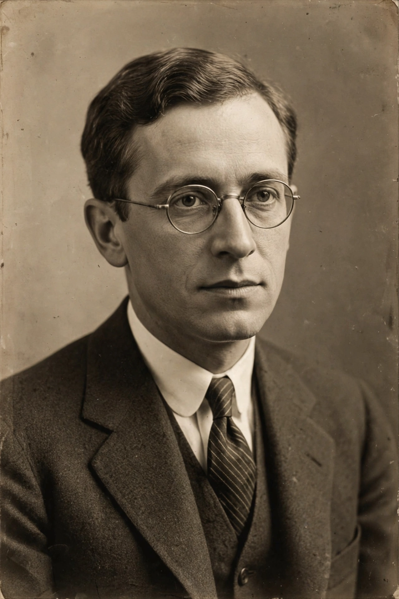

| Born | December 6, 1907 Jacksonville, Florida, U.S. |
|---|---|
| Died | September 5, 1989 (aged 81) Madison, Wisconsin, U.S. |
| Alma mater | Princeton University |
| Known for | Rosser's theorem; Rosser's trick; Church–Rosser theorem; Rosser sieve |
| Fields | Mathematical logic, number theory |
| Institutions | Cornell University; University of Wisconsin–Madison |
| Doctoral advisor | Alonzo Church |
John Barkley Rosser Sr. (December 6, 1907 – September 5, 1989) was an American logician and mathematician known for his work in mathematical logic and analytic number theory. A student of Alonzo Church at Princeton, he made fundamental contributions to the lambda calculus and to the study of the limits of formal systems.
In 1936 Rosser strengthened Gödel's first incompleteness theorem with what is now called Rosser's trick: where Gödel required the stronger assumption of ω-consistency, Rosser showed that simple consistency suffices for the existence of an undecidable sentence. He also proved (with Church) the Church–Rosser theorem on the confluence of lambda calculus reduction, a foundational result for programming-language theory related to systems such as Lisp.
In number theory he developed the Rosser sieve and proved results on the distribution of prime numbers, including bounds showing the nth prime exceeds n ln n. During the Second World War he worked on ballistics and rocketry; he later directed the Mathematics Research Center at the University of Wisconsin–Madison and served as president of the Association for Symbolic Logic.
Categories: 1907 births | 1989 deaths | American logicians | American number theorists